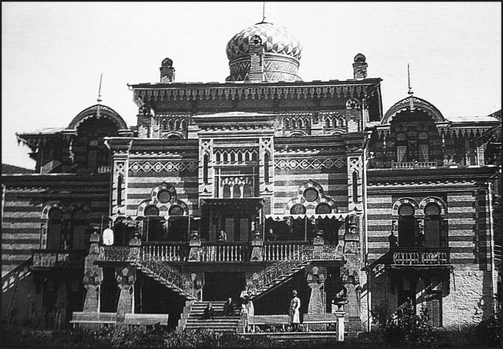

Страницы авторов "Тёмного леса"
Пишите нам! temnyjles@narod.ru
На рубеже XIX-XX веков Кисловодский курорт переживал время небывалого прежде расцвета. И этот расцвет выразился, в частности, в бурном строительстве. А строить в Российской Империи умели и качественно и красиво. Доказательством этому стали многие подлинные архитектурные шедевры, которыми обогатился наш курортный город в тот период. Самыми модными стилями в то время были эклектика, "модерн" и неоклассицизм.
Одним из самых ярких архитектурных творений того периода в Кисловодске стала удивительная по красоте вилла под экзотическим названием "Мавритания". Здание из кирпича двух цветов совмещало в себе архитектурные элементы средневекового мавританского (арабо-испанского) зодчества и даже отдельные мотивы среднеазиатской архитектуры. Вилла "Мавритания" была построена в 1881 году по проекту старшего областного архитектора В.И. Грозмани и сразу стала одним из самых излюбленных объектов для фотографирования в Кисловодске. Редко какой фотограф обходил ее своим вниманием. Располагалась вилла в небольшой балке между отрогами Крестовой горы. Практически симметричное здание со "среднеазиатским" куполом и многочисленными террасами окружали нарядные цветники. Одно время, как видно по снимкам, перед дачей красовалась даже некая скульптура в античном стиле.
Хозяйкой виллы была весьма предприимчивая и очень знатная дама Ольга Андреевна Барановская. Родилась Барановская около 1850 года. Первым ее мужем был крупный государственный чиновник (сенатор) Николай Иванович Барановский. Он и получил в пожизненное пользование участок на склоне горки. А через несколько лет Барановский, который был значительно старше супруги, скончался. "Мавританию" Ольга Андреевна построила уже овдовев. Затем она во второй раз вышла замуж за правительственного комиссара Кавказских Минеральных Вод Вениамина Александровича Башкирова, с которым прожила 5 лет до самой его смерти, последовавшей в 1900 году.
Помимо "Мавритании" у Барановской было еще несколько дач на смежных участках на склонах Крестовой горы. Каждая имела свое название: "Русь", "Забава", "Затишье", "Вид гор", "Цветоводство". Есть также упоминание о еще одной маленькой дачке под названием "Красотка". На всех них сдавались комнаты и благоустроенные квартиры с электричеством, центральным водяным отоплением, ваннами, водопроводом, телефоном. Самой благоустроенной и престижной дачей была "Мавритания". Недаром ее облюбовал даже сам эмир Бухары Сеид-Абдул-Хан, когда со своим семейством прибыл отдыхать на Воды. Старожилы Кисловодска вспоминали эмира и его свиту в ярких богатых одеяниях, вспоминали, что во время приемов, которые монарх устраивал, в нишах стояли "арапчата" в восточных костюмах. Все это так запомнилось кисловодчанам, что в советские годы бывшую "Мавританию" нередко называли "Дворец Эмира Бухарского", а имя истинной владелицы мало кто помнил. Да и улицу, на которой дача располагалась назвали в начале XX века Эмировской (в советские годы переименована в Коминтерна).
Но эмир Бухары был не единственным именитым постояльцем виллы. В осенний сезон 1904 года сюда с женой и сыновьями приехал знаменитый русский фабрикант-миллионер, меценат и театральный деятель Алексей Александрович Бахрушин. Основатель лучшего театрального музея страны. Бахрушины пробыли в Кисловодске не только осень, но и половину зимы и встретили здесь Рождество. Сын мецената Юрий Алексеевич в воспоминаниях писал о том, что в Кисловодске было большой проблемой найти елку к празднику. Поэтому пришлось изменить своей московской привычке и украсить самодельными игрушками и церковными свечами сосну, поставленную в бочку с камнями. А еще Бахрушины остались на Рождество без любимого ими яства - солонины, привезенной Алексеем Александровичем из Москвы. Чтобы солонина получше хранилась - ее поставили на террасе виллы на мороз. И вот в одну из ночей с Крестовой горы спустились волки и "славно ею поужинали", - отмечал в мемуарах Юрий Алексеевич. Но праздник отметили Бахрушины хорошо, а из Кисловодска уехали только в январе 1905 года.
Предприимчивая мадам Барановская продолжала расширять свой "бизнес". При одной из дач она устроила оранжереи, где выращивались цветы на продажу. Букеты можно было приобрести здесь же. На дачах Ольга Андреевна открыла отель-пансион под названием "Затишье", который был после 1910 года приспособлен для круглогодичного пребывания. Среди достоинств пансиона был "прекрасный гигиенический стол", если верить рекламе. В 1908 году Барановская несколько закрыла вид на свою виллу "Мавритания", пристроив к ней обширный павильон казино по проекту местного зодчего Эммануила Ходжаева. Изначально он проектировался как летний театр на 270 зрительных мест. Но как сказал намного позднее видный отечественный политик: "Хотели как лучше, а получилось - как всегда". И театр вроде бы как был, но согласно путеводителю Г. Москвича: "в театре - кафе-шантан, на террасе - "бикс", "железная дорога" и др. азартные игры, а в примыкающих комнатах - царство карт...". Причем открытие этого заведения 21 июня практически сразу "освятилось" скандалом. Уже 10 июля администрация казино написала жалобу в "Биржевые ведомости" на ташкентского мещанина Гастона Сираса, который обвинил администраторов в мошенничестве и назвал их "бандой изгнанных из Франции тёмных дельцов на зелёном поле". Так что за владениями Барановской прочно закрепилась репутация едва ли не самого "злачного места" в Кисловодске. Вероятно, только "Замок Коварства" мог в этом отношении конкурировать. Недаром Анна Васильевна Сафонова (дочь прославленного пианиста и дирижера) вспоминала, как ее бабушка презрительно относилась к дачам "Барановичихи" за "легковесность постройки и коммерческий уклон в использовании". Но все же нельзя упрекнуть Барановскую в том, что ей было чуждо все, что не приносило прибыли. Так, она была в числе членов-учредителей и действительным членом такой важной общественной организации как Кавказское Горное общество.
После установления советской власти на Тереке в 1920 году, всю недвижимость Барановской национализировали и передали под санаторно-курортный фонд. Некоторое время спустя здесь расположились корпуса санатория имени товарища Сталина. А в самой "Мавритании" с 1926 года находились различные культурные учреждения курорта, которые были объединены в Дом культуры медицинских работников. В годы расцвета (1960-1970-е) на базе Дома культуры работало 12 коллективов художественной самодеятельности, в том числе один оперный. Ни при одном доме культуры в крае такого больше не было. Именно здесь сделали первые "сценические шаги" многие артисты, ставшие затем известными. Среди них Светлана Рожкова. Последним директором Дома культуры была Лидия Николаевна Бурдина. Наверное все было бы хорошо и в дальнейшем, но в середине 1970-х гг. рядом развернулось строительство громадного корпуса санатория имени XXII партсъезда (ныне - "Луч"). Тогда же началась так и не закончившаяся никогда стройка нового здания ДК Медработников у Комсомольского парка. В 1976 году здание бывшей виллы "Мавритания" сгорело в результате сильного пожара. Но тогда никто не озаботился возможностью восстановить архитектурную жемчужину, и остатки здания просто снесли. Так Кисловодск навсегда утратил один из ярчайших памятников архитектуры.
Хочется верить в то, что история "Мавритании" будет назиданием для нынешних градостроителей и "градоустроителей", и всяческие сиюминутные "экономически целесообразные" проекты не будут приводить к утрате тех архитектурных шедевров, которые у нас еще пока целы.
 Вилла "Мавритания". Фото начала XXв.
Вячеслав Яновский. Неакадемические сочинения